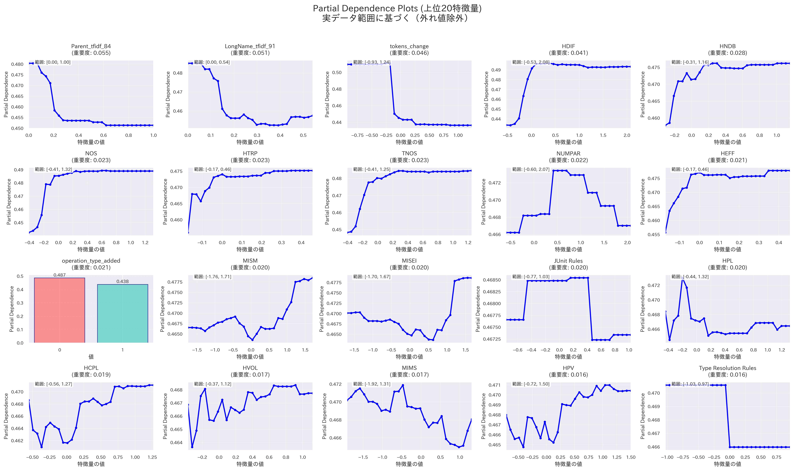
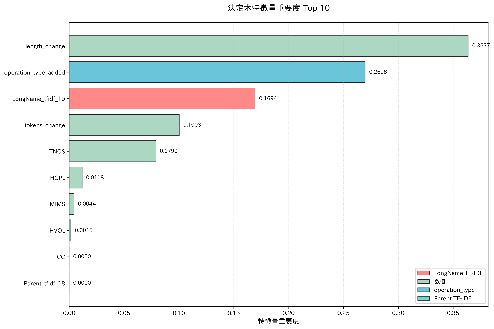
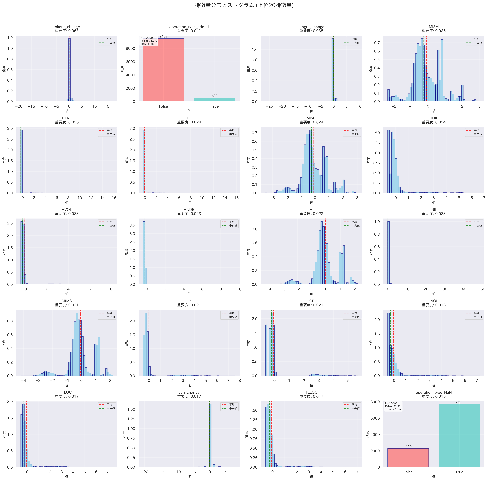
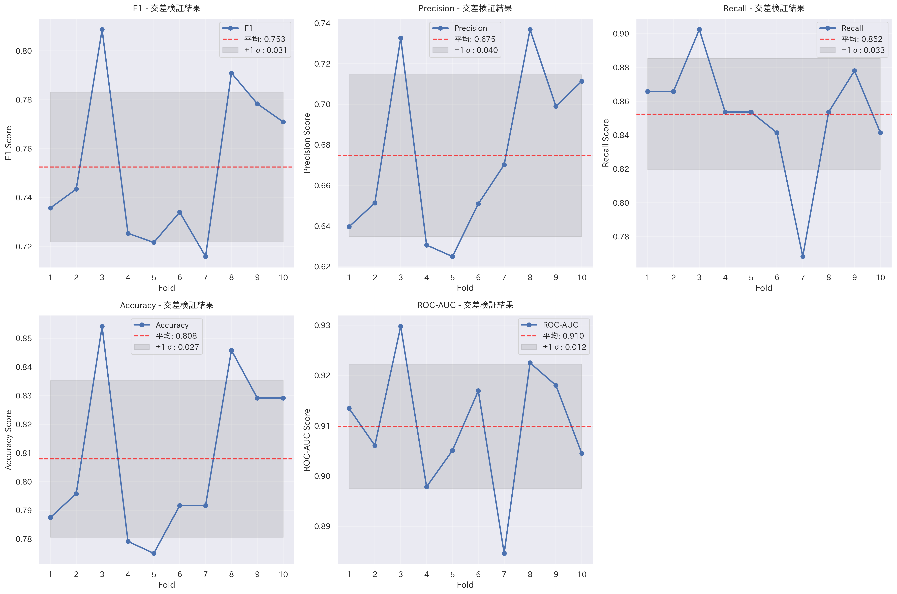
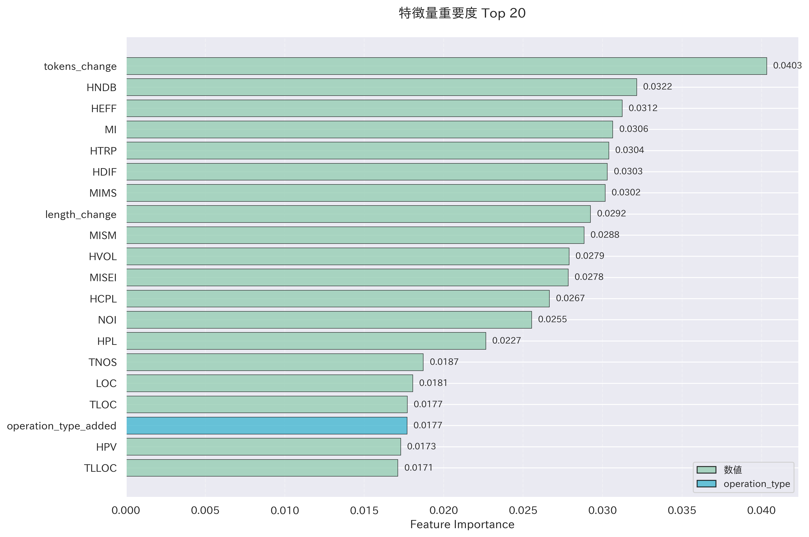

2025年7月26日
今週の活動¶
- それぞれのソフトウェアプロジェクトを分析
antlr4¶
- 学習データ数: 164件（アンダーサンプリング後）
- テストデータ数: 169件
- マクネマー検定の結果
- p値: およそ0.27
- 有意差なし
| 指標（概算） | 特徴量追加前 | 特徴量追加後 |
|---|---|---|
| F1スコア | 0.45 | 0.48 |
| Precision | 0.32 | 0.36 |
| Recall | 0.76 | 0.76 |
| Accuracy | 0.77 | 0.8 |
| ROC-AUC | 0.82 | 0.87 |


特徴量重要度¶
- ParentやLongNameに含まれる特定の単語の重要度が高い
- メソッドのトークン数の変化が精度向上に寄与している
- HDIF、HNDB、HTRPなどのハルステッドメトリクスも重要

特徴量の分布¶
- 全体として分布の偏りが大きく、陰性クラスの特徴を明確に捉えている
- 特定の領域に異なるクラスのデータポイントが密集することで、クラス間の分離が難しくなり、分類境界が曖昧になっている（モデルが細かな違いを学習できていない） 
Partial Dependence Plot¶
- トークン数の変化、HDIF、HNDB、NOS、HTRP、TNOS、HEFFは特定の範囲において陽性クラスの予測確率が高止まりしている
- NUMPAR、JUnit Rulesは凸型の変化が見られ、特定の値の前後では陽性クラスの予測確率が低下
- 全体として、特定の値以上か以下になると陽性クラスの予測確率が大きく増加

決定木¶
- LongNameに含まれる特定の単語の重要度が0.139以下 -> トークン数の変化量が-0.136以下のときにジニ不純度がおよそ0.19となり、陽性クラスを高い確率で分類している
- LongNameに含まれる特定の単語の重要度が0.139以下ではない -> TLOC（Total Lines of Code）が-0.05以下のときにジニ不純度がおよそ0.07となり、陰性クラスを高い確率で分類している
ceylon-ide-eclipse¶
- 学習データ数: 828件（アンダーサンプリング後）
- テストデータ数: 426件
- マクネマー検定の結果
- p値: およそ0.000001
- 有意差あり
| 指標（概算） | 特徴量追加前 | 特徴量追加後 |
|---|---|---|
| F1スコア | 0.39 | 0.49 |
| Precision | 0.30 | 0.40 |
| Recall | 0.56 | 0.65 |
| Accuracy | 0.57 | 0.67 |
| ROC-AUC | 0.60 | 0.69 |

特徴量重要度¶
- コード行数の長さの変化は最も重要度が高い
- Maintainability Index関連のメトリクス（MI, MISEI, MIMS, MISM）も重要度が高い
- ハルステッドメトリクス（HNDB, HTRP, HCPL, HEFFなど）が引き続き上位に位置している
特徴量の分布¶
- Maintainability Index関連のメトリクスは分散が大きい
- ハルステッドメトリクス、コード行数やトークン数の変化量は分散が比較的小さいため、それぞれの特徴量のみでクラスを分類するのは難しい

Partial Dependence Plot¶
- Maintainability Index関連のメトリクス、一部のハルステッドメトリクス（HCPL、HVOL、HDIF、HPL、HPV）は凹型のグラフになっており、特定の値付近で陽性クラスの予測確率が低くなり、その前後で陽性クラスの予測確率が高くなっている
- コード行数の変化、トークン数の変化、HNDB、HTRP、HEFFのいずれかの値を変化させても、陽性クラスの予測確率にはあまり変化が見られない


決定木¶
- コード行数の変化量が-0.037以下 -> メソッド操作が「追加」 -> LongNameに含まれる特定の単語の重要度が0.339以下ではないときにジニ不純度がおよそ0.22となり、陽性クラスを高い確率で分類している
- コード行数の変化量が-0.037以下 -> メソッド操作が「追加」ではないときにジニ不純度が0.138となり、陰性クラスを高い確率で分類している
- コード行数の変化量が-0.037以下ではない -> HCPL（Halstead Calculated Program Length）が0.386以下のときにジニ不純度が0.08となり、陰性クラスを高い確率で分類している
elasticsearch¶
- 学習データ数: 1604件（アンダーサンプリング後）
- テストデータ数: 600件
- マクネマー検定の結果
- p値: およそ0.000001
- 有意差あり
| 指標（概算） | 特徴量追加前 | 特徴量追加後 |
|---|---|---|
| F1スコア | 0.62 | 0.72 |
| Precision | 0.51 | 0.61 |
| Recall | 0.79 | 0.87 |
| Accuracy | 0.67 | 0.77 |
| ROC-AUC | 0.79 | 0.88 |


特徴量重要度¶
- トークン数やコード行数の変化量の重要度が高い
- メソッド操作が「追加」であるかどうかもクラス分類の判断に影響を与えている
- ハルステッドメトリクス、Maintainability Index関連のメトリクスもある程度の重要度がある 
特徴量の分布¶
- トークン数、コード行数、循環的複雑度のいずれも変化量はほとんど0

Partial Dependence Plot¶
- トークン数、コード行数の変化量が0付近であるほど陽性クラスの予測確率が高まる
- MISM、MISEIは凹型であり、0付近で陽性クラスの予測確率が最も低くなる


決定木¶
- MI（Maintainability Index）が0.56以下 -> メソッド操作が「追加」ではないときにジニ不純度が0.115となり、陰性クラスを高い確率で分類している
- MI（Maintainability Index）が0.56以下ではない -> NII（Number of Incoming Invocations）が0.371以下 -> トークン数の変化量が-0.092以下のときにジニ不純度が0.132となり、陰性クラスを高い確率で分類している
BroadleafCommerce¶
- 学習データ数: 826件（アンダーサンプリング後）
- テストデータ数: 600件
- マクネマー検定の結果
- p値: およそ0.45
- 有意差なし
| 指標（概算） | 特徴量追加前 | 特徴量追加後 |
|---|---|---|
| F1スコア | 0.46 | 0.45 |
| Precision | 0.32 | 0.32 |
| Recall | 0.81 | 0.78 |
| Accuracy | 0.67 | 0.68 |
| ROC-AUC | 0.82 | 0.83 |


特徴量重要度¶
- ハルステッドメトリクス、Maintainability Index関連のメトリクスの重要度が高い
- 変化量メトリクスは特徴量の重要度上位20件に含まれていない
特徴量の分布¶
- MI、MISEI、MISM、MIMSに明確な二峰性があり、陽性クラスや陰性クラスの傾向を掴みにくい
- ハルステッドメトリクスの値が全体的に大きく、陽性クラスと陰性クラスの境界を設定しにくい
Partial Dependence Plot¶
- ハルステッドメトリクスが一定の値以上になると陽性クラスの予測確率が高止まりする
- ハルステッドメトリクスは重要度が高いが、数値的な重要度はあまり高くないことを示唆している


- ハルステッドメトリクスは重要度が高いが、数値的な重要度はあまり高くないことを示唆している
決定木¶
- 他のソフトウェアプロジェクトの決定木と比べて、陽性と予測されるノード数が多い
- Precisionが低いことから、偽陽性の原因となった条件式が多いことが分かる
hazelcast¶
- 学習データ数: 1640件（アンダーサンプリング後）
- テストデータ数: 600件
- マクネマー検定の結果
- p値: およそ0.004
- 有意差あり
| 指標（概算） | 特徴量追加前 | 特徴量追加後 |
|---|---|---|
| F1スコア | 0.67 | 0.71 |
| Precision | 0.58 | 0.63 |
| Recall | 0.81 | 0.82 |
| Accuracy | 0.73 | 0.77 |
| ROC-AUC | 0.86 | 0.88 |
 
特徴量重要度¶
- トークン数やコード行数の変化量の重要度が高い
- ハルステッドメトリクスやMaintainability Index関連のメトリクスも重要度が高い
特徴量の分布¶
- ハルステッドメトリクス、トークン数やコード行数の変化量の分布は大きな偏りがある
Partial Dependence Plot¶
- トークン数やコード行数の変化量は、0付近で最も陽性クラスの予測確率が高い
- ハルステッドメトリクスは特定の値以上になると陽性クラスの予測確率が高止まりする
- TNOS（Total Number of Statements）、TLOC（Total Lines of Code）は陽性クラスの予測確率と比例している

決定木¶
- NOI（Number of Outgoing Invocations）が-0.815以下 -> HEFFが-0.203以下のときにジニ不純度が0.145となり、陰性クラスを高い確率で分類している
- NOI（Number of Outgoing Invocations）が-0.815以下ではない -> メソッド操作が「追加」ではない -> MIMS（Maintainability Index （Microsoft version））が-0.629以下のときにジニ不純度が0.065となり、陰性クラスを高い確率で分類している
mct¶
データセットを構築する際に使われたリポジトリ（https://github.com/nasa/mct） にアクセスできないため省略
oryx¶
- 学習データ数: 124件（アンダーサンプリング後）
- テストデータ数: 163件
- マクネマー検定の結果
- p値: およそ0.09
- 有意差なし
| 指標（概算） | 特徴量追加前 | 特徴量追加後 |
|---|---|---|
| F1スコア | 0.33 | 0.39 |
| Precision | 0.22 | 0.26 |
| Recall | 0.73 | 0.80 |
| Accuracy | 0.73 | 0.77 |
| ROC-AUC | 0.78 | 0.84 |
特徴量重要度¶
- トークン数やコード行数の変化量の重要度が高い
- ハルステッドメトリクスやMaintainability Index関連のメトリクスの重要度も高い
- LOC（Lines of Code）、LLOC（Logical Lines of Code）、TLOC（Total Lines of Code）の重要度が高い
特徴量の分布¶
- コメント関連のメトリクスやMaintainability Index関連のメトリクスは分散が大きい
- トークン数やコード行数の変化量、ハルステッドメトリクスは分散が小さい

Partial Dependence Plot¶
- コメント関連のメトリクスが一定以上のときに陽性クラスの予測確率が高止まりしている
- トークン数やコード行数の変化量については、0付近で陽性クラスの予測確率が最も高くなっている

決定木¶
- トークン数の変化量が-0.066以下 -> MISEI（Maintainability Index（SEI -version））が-0.663以下ではないときにジニ不純度が0となり、陰性クラスを高い確率で分類している
- トークン数の変化量が-0.066以下ではない -> コード行数の変化量が0.139以下ではないときにジニ不純度が0となり、陰性クラスを高い確率で分類している
得られた成果¶
特徴量エンジニアリングの効果¶
- elasticsearch、ceylon-ide-eclipse、hazelcastではF1スコアの有意な改善が見られた
- antlr4、oryxではクラスの分類に有意な差はなかったが、F1スコアがある程度向上した
- BroadleafCommerceでは有意差はなく、F1スコアが少し低下した
- このうち、antlr4、oryxについてはアンダーサンプリングの結果、学習データが100件程度しか残らなかったため、サンプルサイズが不足していると考えられる
- BroadleafCommerceについては、ハルステッドメトリクスの値が全体的に大きいため、陽性クラスと陰性クラスの境界を設定しにくいことが分かった
- これが原因で偽陽性の割合が大きくなったと考えられる
- 決定木の条件式を見ると、陰性クラスの分類ではジニ不純度が低いことから、陰性と予測されたクラスを高い確信度で分類できていることが分かる
- すなわち、コード行数やトークン数の変化量といった時系列データは陰性クラスの予測精度向上には比較的貢献するが、陽性クラスの予測精度向上にはあまり貢献しないことが示唆された
- F1スコアが向上した理由は、陰性クラスの予測精度向上によって、消去法的なクラス分類の精度が向上したためであると考えられる
陰性クラス（バグを含まないメソッド）の特徴¶
- リファクタリングのような手法でコードが整理された場合、コード行数やトークン数が減る
- さらに、そのメソッドが他のメソッドを呼び出す回数（NOI）やそのメソッドを理解するのに必要な精神的努力量（Halstead Effort、HEFF）も減る傾向にある
- バグを含まないメソッドの場合は保守性を表すメトリクスの値が小さいことが主な特徴の1つであり、その背景は比較的単純
陽性クラス（バグを含むメソッド）の特徴¶
- Partial Dependence Plotを見ると、いずれの特徴量においても、Partial Dependenceが0.5を超える領域がほとんどない
- 陽性クラスの予測確率が低いことが分かる
- 実際に、決定木分析の結果、陽性クラスであると予測するノードのジニ不純度は全体的に高い
- 陽性クラスである理由（メソッドにバグが混入した理由）が複数あり、それらを区別できていないため、陽性クラスの特徴を十分に捉えられていないのかもしれない
直面した課題¶
- 陽性クラスを詳細に分類するための方法を考える必要がある
- この研究では保守性を低下させる要因を、バグと保守性メトリクスから分析しようとしている
- 保守性メトリクスを特徴量エンジニアリングによって増やしたところ、F1スコアは向上したが、それらのメトリクス値とバグとの関連が未だ不明確
- 今度はバグの分析に焦点を当てることで、保守性低下要因の分析に役立つ情報が得られるかもしれない
バグによる保守性低下の流れ¶
レイヤー1: 背景¶
- バグが発生する根本的な状況
- 組織やプロジェクトの構造的、持続的な条件であり、開発チームが直面している課題
- バグレポートには記載されない
- 例: 人員不足、厳しいリリーススケジュール、システムの制約、チームメンバーの経験不足
レイヤー2: バグの原因¶
- 背景によって引き起こされるバグ混入の具体的な理由
- 実際に発生する判断ミス
- バグレポートに記載される
- 例: 入力の検証不足、並行処理の同期ミス、メモリ管理エラー、API仕様の誤解
レイヤー3: メトリクスの変化¶
- バグの原因によって実際のコードに現れる、定量的に測定可能な変化
- 例: トークン数の変化、ハルステッドメトリクスの値、メソッド操作の種類
来週の計画¶
- バグレポートを分析することでバグの原因を調べ、保守性を表すメトリクスの変化との関係性を明らかにする